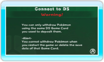
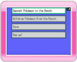
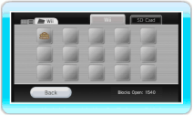

13 |
Connecting to a Nintendo DS System |
 |
You can deposit or withdraw Pokémon you caught or traded in Pokémon Diamond or Pokémon Pearl using the Nintendo DS.

Wii Screen When you select Connect to DS in the My Pokémon Ranch Main Menu, the screen shown to the right will be displayed. When the screen on My Pokémon Ranch changes to the one shown below, turn on your Nintendo DS system with a Pokémon Diamond or Pokémon Pearl Game Card already inserted. Select CONNECT TO Wii in the Pokémon Diamond or Pokémon Pearl Main Menu.
If connection is successful, the screens below will be displayed on the Wii console and Nintendo DS system. From here, you'll operate the game with your Nintendo DS system. However, the first time you connect your Nintendo DS System, you will need to choose a Caretaker Mii in My Pokémon Ranch to look after the trainer’s Pokémon (see "18. Deposit Details"). Note: You can change the Caretaker Mii at any time.

DS Screen On the Nintendo DS system, the Main Menu will be displayed. Make a selection and press Main Menu on the Nintendo DS
For details after this step, please refer to 14. “Deposit Pokémon” or 15. “Withdraw Pokémon”.

Wii Screen
● Deposited Pokémon The Ranch data will be saved to the Wii console. This can be accessed via the Data Management Screen. Note: If you erase the save data, all of your deposited Pokémon will be deleted and you will be unable to withdraw them. Once you erase the save data, the data cannot be restored. |
 .
. |
 |
 |